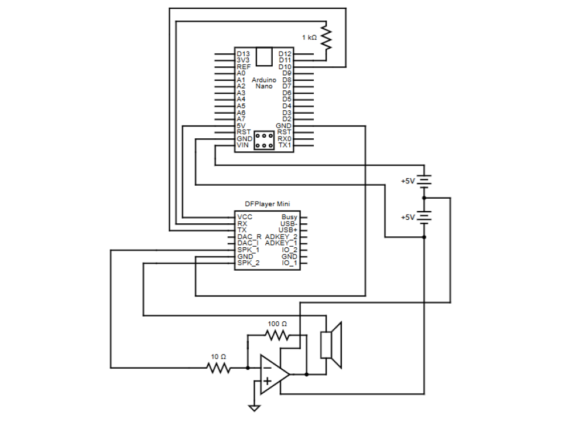
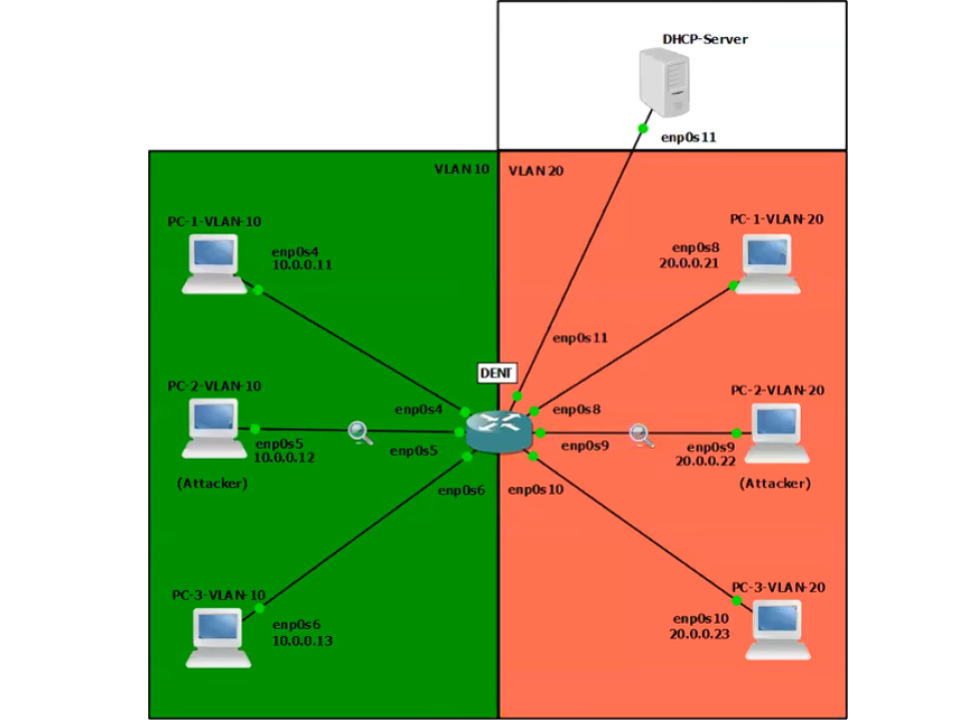
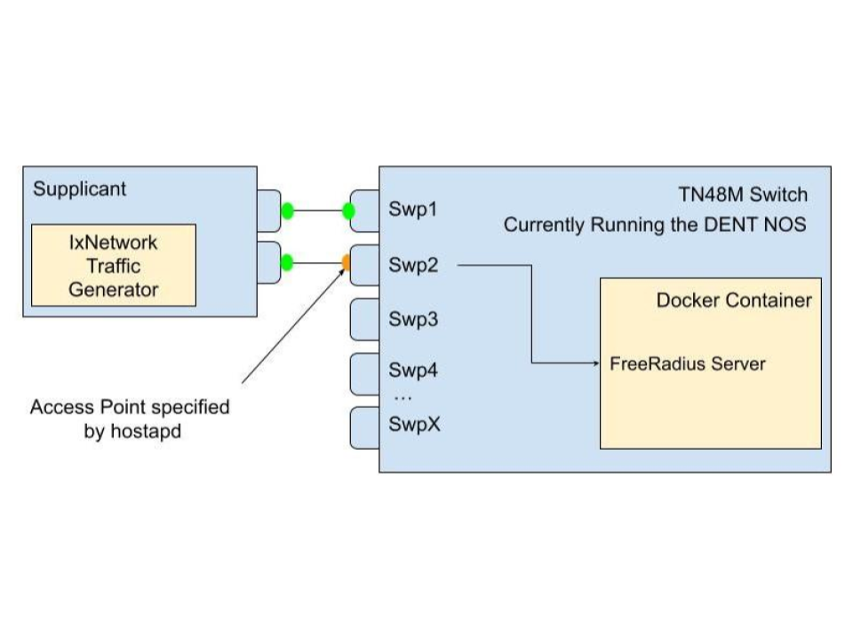
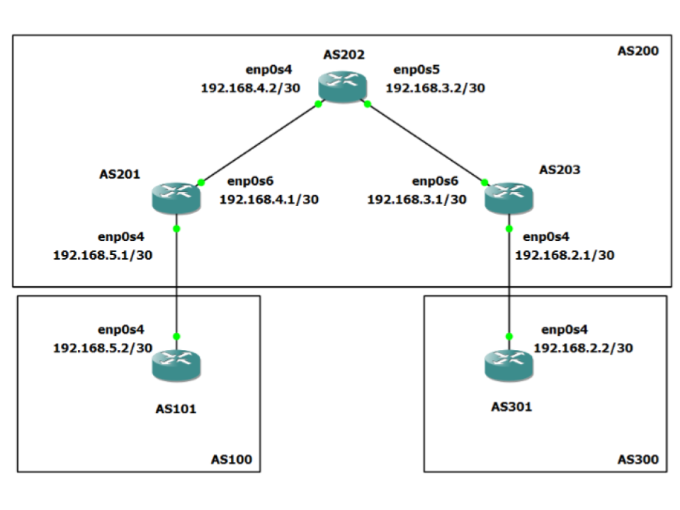

Open Source Projects
Scroll to the right for more
Portable Speaker - 2025
A simple, battery powered arduino-based speaker.
This diagram is for the circuit network of the portable arduino speaker
This Arduino-powered portable speaker is a self-contained, battery-operated audio device designed for
maximum portability and simplicity. It utilizes the
DFPlayer Mini
to play audio files directly from an SD card,
enabling automatic track looping. Powered by 6 AA-batteries, the speaker is easy to maintain, with quick and
convenient battery replacement.
The concept for this speaker originated from collaborative discussions with Jackson Bowles, Alex Anthony, and Brenden Mahoney
as a potential startup venture, where the idea evolved through brainstorming and feedback.
KDAI - 2025
KDAI (Kernel Dynamic ARP Inspeciton) is a Loadable Kernel Module for Linux systems that enhances network security
Screenshot of GNS3 Simulaiton where multiple PC's in different VLANs are connected to a switch running KDAI
The Address Resolution Protocol (ARP)
lacks built-in validation, making networks vulnerable to
ARP cache poisoning
and enabling man-in-the-middle or denial-of-service attacks. Enterprise-grade switches often offer
Dynamic ARP Inspection (DAI)
as a Layer 2 security feature to mitigate such risks.
However, Linux-based networking environments have lacked an equivalent - until now.
To fill this gap KDAI (Kernel Dynamic ARP Inspection), a Linux kernel module, was developed to implement DAI.
KDAI is a Loadable Kernel Module (LKM) for Linux systems that enhances Layer 2 network security by preventing ARP cache poisoning.
It operates by intercepting ARP messages traversing a Linux bridge and comparing ARP entries against a trusted database of IP-to-Mac address bindings.
This database is built dynamically using
DHCP Snooping
but may also be populated using static ARP entries.
Key Features:
- ARP Inspection: Logs and drops ARP packets with mismatched IP-to-MAC bindings to prevent ARP spoofing.
- DHCP Snooping: Builds a dynamic table by monitoring DHCP traffic to ensure valid IP-to-MAC bindings.
- Static ARP ACLs: Allows manual configuration of trusted IP-to-MAC bindings.
- Interface Trust: Interfaces can be marked as trusted (bypass checks) or untrusted (ARP inspection required).
- ARP Rate Limiting: Limits ARP packets to 15 per second on untrusted interfaces to prevent flooding.
- Per-VLAN Support: Applies rules independently to each VLAN for more granular control.
IEEE802.1x Docker Image - 2024
Custom Docker Image for IEEE 802.1x RADIUS Server & Authenticator
This diagram shows an 802.1X network setup where a supplicant (client) connects to an access point on an Authenticator (a TN48M Switch), which forwards authentication requests to a FreeRadius server running in a Docker container
This Docker image simplifies the setup of
IEEE 802.1X authentication by containerizing the
RADIUS server
and using
hostapd
and
FreeRADIUS
to manage network access. When run on a device, the image configures it
as both an Authenticator and an Authentication Server, allowing it to handle incoming EAPOL
frames from Supplicants (devices seeking network access).
The device acts as an access point, blocking all non-EAP traffic until the authentication process completes.
It forwards EAP messages to the internal RADIUS server for credential validation. Once validated, the RADIUS server
sends either an Access-Accept or Access-Reject message, controlling whether the port is opened for normal traffic or
kept locked.
This setup lets administrators easily replicate the entire 802.1X handshake-including EAP-Start, identity exchange,
RADIUS challenges, and authorization-without complex configuration. The use of hostapd for access point functionality
and FreeRADIUS for credential checking makes it a powerful, flexible solution for network access control.

DENT Documentation - 2024
This Project was a step by step guide using GNS3 on how to configure a Linux Based Network Operating System called DENT
This diagram shows a classic instance of a network topology and is part of the how to configure BGP using Free Range Routing
Authored documentation for DENT, an open-source Network Operating System,
and configured ~30 different networking topologies across the TCP/IP suite of protocols.
Below are a few examples I documented and configured:
- Addressing and Filtering:
DHCP,
ACLs, and
NAT.
- Discovery and Management:
BGP,
OSPF,
STP,
LLDP, and
VRRP.
- VLAN Configurations:
Linux bridges,
VLANs, and
Trunks
- Authentication:
IEEE 802.1X
with EAP-TLS and EAP-TTLS.